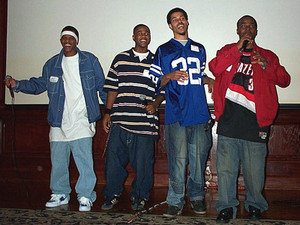

In 2002, lightning struck within the halls of UCAN. Three young men took their friendship and talent to new heights by founding the Uhlich Voices program, which is in resurgence and rebranded today as UCAN Voices.
In its infancy, Voices was simply a way for three young men from Chicago’s South Side – Fred Long, Jason Daniels and Victor Spencer – to bond through their passion for song writing, freestyle rap and musical expression.
Jason started his musical journey near the Rainbow Beach neighborhood in Chicago, playing the violin in the second grade. At the time he was pushed into it by his grandmother, but grew to look forward to the lessons. Facing the turmoil of having two brothers incarcerated, gang fights and gun violence in the streets, Jason spent most of his time in his room practicing violin and writing song lyrics. Soon he built up the confidence to perform in talent shows at school and found himself surrounded by crowds of his peers as he practiced free style rapping in the lunch room. 
This love of music was what soon connected Jason to Fred. Although they went to high school together, both were so focused on keeping their heads down and away from trouble on the streets that they didn’t discover their kinship until playing as teammates on East West College’s basketball team. That’s when Fred introduced Jason to his longtime friend Vic and the three became inseparable, recording dozens of mix tapes in Victor’s apartment that was then part of UCAN’s Transitional Living Program.
“I was a natural show-off,” Jason says. “But Fred would not rap outside of his laundry room, Vic’s house or on the bus. You could tell he wanted to get into the rap battles I was getting into but he would never do it. So Uhlich Voices was kind of like his coming out party.”
For 6-8 months, the young men cataloged the best songs from their repertoire that could be perfected and combined into a published album. With the help of UCAN’s Executive Vice President Claude Robinson, they learned how to find and network with music industry representatives and secured grant funding from Amistad Foundation to start the recording process in 2004. Once their album was released, the group toured coast to coast for almost three years, performing for crowds of thousands.
Flash forward to 2018: Vic Spencer’s musical career is still on the rise. His album is listed on the top 40 independent charts and he has worked with some of the most lauded artists in the rap music industry, including Chance the Rapper, Mick Jenkins, Vic Mensa and Red Man. His most recent release is a feature on Ghostface Killah’s new album.
Fred Long has also become an example of how UCAN builds future leaders. UCAN offered him an internship after his time in care, and he worked his way through the ranks to become vice president of Development, managing a team of seven to secure resources to contribute to UCAN’s budget of over $40 million to support youth and families in need.
 During the height of their recording efforts, Jason moved to New York City to make a name for himself as a songwriter. Unfortunately, he found out quickly that without extensive knowledge of the music industry, you can be taken advantage of and left with little means for survival. It was his experiences in New York that brought him back to UCAN with a deeper and more passionate interest in protecting and educating the youth we serve. Jason is currently a youth development coach at UCAN and one of the main parties responsible for bringing the Voices program back into prominence.
During the height of their recording efforts, Jason moved to New York City to make a name for himself as a songwriter. Unfortunately, he found out quickly that without extensive knowledge of the music industry, you can be taken advantage of and left with little means for survival. It was his experiences in New York that brought him back to UCAN with a deeper and more passionate interest in protecting and educating the youth we serve. Jason is currently a youth development coach at UCAN and one of the main parties responsible for bringing the Voices program back into prominence.
Under Jason’s guidance, Voices’ meetings allow for a fun and free-spirited atmosphere without losing any structure or momentum in its therapeutic objectives. Youth rotate every other week between learning the ins and outs of the music business and the tools for engineering, beat making and expressive writing. The other weeks are devoted to recording and allowing each young person to share their story.
Jason says he’s been amazed week to week at the progress our young people make. One youth, James, recently needed a push to realize his potential. “Before we started Voices I was working with James as a mentor. He had a severe speech impediment. He was very withdrawn and couldn’t make eye contact. One way that I would try to connect with him when I would pick him up from school was playing him songs. He liked blues and some other stuff like that. I thought … let me try something with him. So I started freestylin’ over some instrumentals. It became a thing with us and every time I would pick him up he was looking ready with a new beat to try writing lyrics for.”
The next step was to get James to understand how to work through some his unanswered questions in his life, like his relationship with his father that had put a strain on his development throughout his adolescence. “A lot of things that have happened to James, he is still searching for answers to. Unfortunately he might not ever get those answers. But music has helped him tremendously with his speech. Within a year you can hardly tell he ever had a stutter or difficulty communicating,” adds Jason.
Jason explains that the Voices program’s goals and expectations have shifted slightly since his time as a member. He plans to host performances and find ways for youth to boost their confidence through recording. But the bulk of the program focuses on therapeutically learning about life through the ins and outs of the music business, and driving home the value of being able to tell your story in a way that other people cannot.
“It is how I got through my hard times when my father was on drugs and I was having a lot of resentment towards him. I had so much anger towards him that I couldn’t bring myself to just sit down and talk with him,” Jason recalls. “I remember writing the song ‘Fathers’ Day’ and just crying. It wasn’t even sadness; it was a release and a weight off of me to express those feelings.”
Jason wants the future of UCAN Voices to provide a similar release for many more youth looking for answers to difficult questions in their lives. “The thing about music is it is a universal language. It takes the power away from those who have hurt you,” Jason says. “And these youth are learning SO much that they don’t realize will be valuable for their life down the road.”
Thanks to new funding from the Chicago Chapter of The Links Inc., and a blended partnership with UCAN’s Express Therapy program, UCAN Voices is seeing growth in membership and success. If you have an interest in music, spoken word or the performing arts, we welcome guest speakers, volunteers and recommendations for additional funding sources to keep this special resource available to the youth and families we serve.
By Ann Kniola